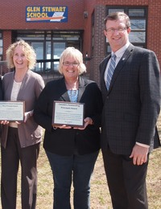

June
19, 2012
For immediate release
Island
educator receives national leadership award
Available
Photos

Island Educator, Marilyn MacLean recently received the 2012 Canada’s Distinguished Vice Principal Award, says Education and Early Childhood Development Minister Alan McIsaac.
“This is an incredible accomplishment and I would like to congratulate Vice Principal MacLean on receiving this prestigious national award,” said Minister McIsaac. “Ms. MacLean is a phenomenal leader and inspiring educator and deserves recognition for her steadfast approach to teaching and student-centred philosophy.”
Ms. MacLean, vice principal at Glen Stewart Primary School in Stratford, was recently named one of Canada’s Distinguished Vice Principals at a conference in Montreal. The award, presented by the Canadian Association of Principals, honours leadership in school administration in education across the country.
Ms. MacLean is described as a new age leader and should be commended for her work in creating a learning environment for children that represents respect, well-being and excellence in creative and innovative programming. She is committed to improving student achievement, staff development and engaging parents in the school community.
In the Distinguished Vice Principal Award program, vice principals are nominated by their peers, school staff and community members in an extensive nomination and selection process. Nominations are reviewed and final winners chosen by the National Selection Committee.
-30-
Media Contact: Laura Steeves